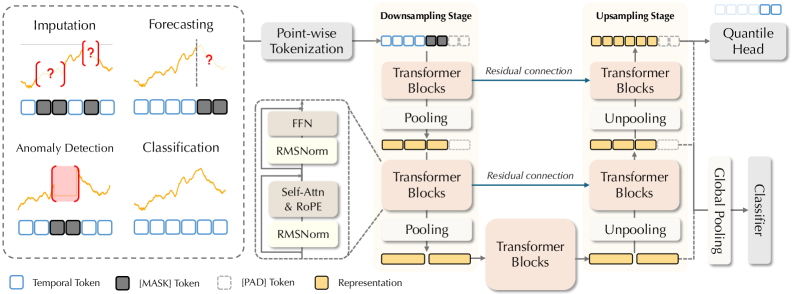
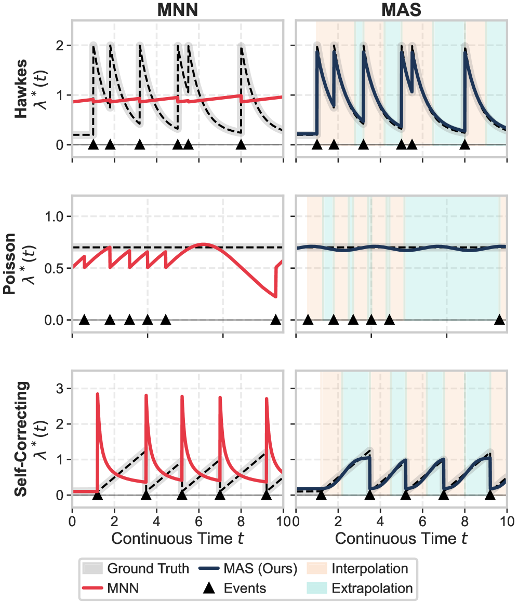

如何在不为每个下游任务单独微调的情况下，让同一个时序模型同时保留点级细节、长程结构和多任务所需的归纳偏置？
对当前主题的关键意义在于：可把现有高低频诊断窗口统一成多尺度 token，预训练外推、补全和全局状态识别三类目标，再比较 Zeus 式多目标预训练、单一 forecast 预训练和监督破裂模型在跨炮 AUC、提前量和缺失鲁棒性上的差异。
方法与关键创新

Figure 2: Overall architecture of Zeus . Inputs from different downstream tasks are first unified into a common format and converted into point-wise tokens via tokenization. The re...
Figure 2: Illustration of SGA. SGA uses a shared attention score matrix 𝓐 \bm{\mathcal{A}} to model common attention patterns and an input-dependent residual score matrix 𝓡 t \bm{\...
如何在保证累计条件强度单调性的同时，提高复杂时间动态的表达能力，并避免数值近似带来的不稳定？
对当前主题的关键意义在于：可把 ELM 突变、辐射尖峰、控制动作、阈值报警和缺失触发编码为事件序列，用 MAS 估计未来危险事件强度，再与连续诊断 encoder 的风险分数融合，比较提前预警和误报率。
方法与关键创新

Figure 1: Performance comparison of MNNs and MAS on three classical TPPs (Hawkes, Poisson, Self-Correcting). The left column shows the three MNN deadlocks—Convexity Restriction, Sa...
Figure 2: Overview of VT-WAM. (a) Joint visual-tactile-action flow matching with three modality-specific experts connected by Asymmetric MoT Attention. (b) Attention masks in Asymm...
能否把昂贵的未来视觉建模压缩成轻量变化先验，让下游模型关注与任务有关的局部变化，而不是密集重建全图？
对当前主题的关键意义在于：可把诊断时序异常作为 query，训练轻量 change-map head 预测未来几个窗口内可见光局部变化，再把少量 ROI token 融入破裂预测模型，比较全图 ViT、固定 ROI 和变化图引导 ROI 的延迟、显存、AUC 与解释一致性。
方法与关键创新
Figure 4: Experimental results across simulation, ablation, and real-robot evaluations. (I)-(III) RoboTwin 2.0 results on the 15-task subset, including per-task radar plots under t...
Figure 1 : Overview CALM. Given unpaired MRI and genetics data, pretrained encoders ( ℰ I \mathcal{E}_{I} , ℰ G \mathcal{E}_{G} ) output item-specific representations that are proj...
![Figure 4: Experimental results across simulation, ablation, and real-robot evaluations. (I)-(III) RoboTwin 2.0 results on the 15-task subset, including per-task radar plots under the Easy and Hard tracks and average success rates for each model across both tracks. (IV) VLABench-5 ablation results, reporting the average success rate (SR) and progress score (PS) for each world-prior and conditioning configuration. Here, 1 × \times 1, etc. denote the spatial resolution of future, change, or flow priors before flattening into conditioning tokens or spatial biases. (V) Dobot real-robot evaluation results, reporting the average success rate under each evaluation track.](../assets/figures/bd990752512e0e37.png)
![Figure 1 : Overview CALM. Given unpaired MRI and genetics data, pretrained encoders ( ℰ I \mathcal{E}_{I} , ℰ G \mathcal{E}_{G} ) output item-specific representations that are projected into a shared latent space via the learned linear maps 𝐖 I \mathbf{W}_{I} and 𝐖 G \mathbf{W}_{G} . The loss function simultaneously matches the within-class distributions across modalities, while separating diagnostic groups. The cross-modal association matrix 𝐀 = 𝐖 I ⊤ 𝐖 G \mathbf{A}=\mathbf{W}_{I}^{\top}\mathbf{W}_{G} quantifies the association between each brain region and genetic pathway.](../assets/figures/d1128360fe93701a.png)